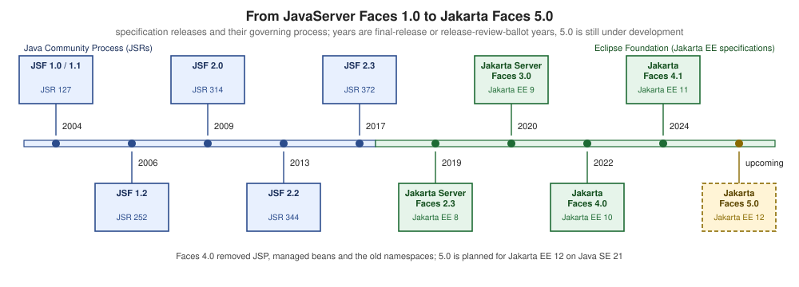

Introduction & History
|
This content was generated with the assistance of AI and should be verified against the official documentation before being relied on in production. |
This page is written against Jakarta Faces 4.1 (API jakarta.faces:jakarta.faces-api 4.1.2, part of Jakarta EE 11 and
requiring Java SE 17 or later), Eclipse Mojarra 4.1.17 and Apache MyFaces Core 4.1.4, on Java 17 or 21. Faces 4.0 (Jakarta EE 10,
Java SE 11 or later, Mojarra 4.0.26 and MyFaces 4.0.4) is still widely deployed, so the text says where it differs. Faces 5.0
(Jakarta EE 12, Java SE 21 or later) is still under development, with milestone 5.0.0-M9 published on 2026-09-18, and is described
only as "upcoming". Versions and dates were checked on 2026-10-08 against Maven Central, the Jakarta EE specification pages and the
Java Community Process pages. The examples were compiled in a scratch Maven web application against the 4.1.2 API. The page
places Faces among the other ways of building a web user interface and tells its history, before the rest of the section builds
the Bookshelf — a catalogue of books, authors and reviews — one concept at a time.
What Jakarta Faces Is
The Jakarta Faces specification describes itself as a model-view-controller framework for building user interfaces for web applications. It defines a set of user interface components, a way to manage their state, an event and listener model, input validation, page navigation, and support for internationalisation and accessibility. The specification is implemented by independent products, mainly Eclipse Mojarra and Apache MyFaces Core, and it is part of the Jakarta EE platform that application servers implement.
Three words in that description decide how a Faces application feels.
-
Server-side. The application’s logic and the component tree live on the server. The browser receives HTML, CSS and a small JavaScript library (
faces.js) that sends Ajax requests. -
Component-based. A page is not a template that pulls model values into markup. It is a tree of stateful UI components (
UIViewRoot,UIForm,UIInput, …) that the framework builds, restores, updates and renders on every request. -
Standard. The component model, the lifecycle, the extension points and the XML and annotation configuration are a Jakarta EE specification with a technology compatibility kit, so a view written for one implementation runs on another.
Source: Jakarta Faces specification page
The following view is the whole presentation layer of a Bookshelf search page. It declares components and binds them to a CDI bean; nothing in it says how the request is decoded, validated or rendered.
<!DOCTYPE html>
<html xmlns="http://www.w3.org/1999/xhtml"
xmlns:h="jakarta.faces.html"
xmlns:f="jakarta.faces.core">
<h:head>
<title>Bookshelf</title>
</h:head>
<h:body>
<h:form id="search">
<h:inputText id="query" value="#{bookListBean.query}">
<f:valueChangeListener type="org.example.bookshelf.web.SearchChangeListener"/>
</h:inputText>
<h:commandButton value="Search" action="#{bookListBean.search}"/>
</h:form>
<h:dataTable value="#{bookListBean.books}" var="book">
<h:column>#{book.title}</h:column>
<h:column>#{book.author}</h:column>
</h:dataTable>
</h:body>
</html>The bean is a plain CDI bean. @ViewScoped (package jakarta.faces.view) keeps it alive for as long as the user stays on the same view.
package org.example.bookshelf.web;
import java.io.Serializable;
import java.util.List;
import jakarta.faces.view.ViewScoped;
import jakarta.inject.Named;
import org.example.bookshelf.model.Book;
@Named
@ViewScoped
public class BookListBean implements Serializable {
private String query = "";
private List<Book> books = List.of(
new Book("978-0-441-17271-9", "Dune", "Frank Herbert"),
new Book("978-0-441-56956-5", "Neuromancer", "William Gibson"));
public void search() {
books = books.stream()
.filter(b -> b.title().toLowerCase().contains(query.toLowerCase()))
.toList();
}
public String getQuery() {
return query;
}
public void setQuery(String query) {
this.query = query;
}
public List<Book> getBooks() {
return books;
}
}The Jakarta EE Tutorial published as current/ is the Jakarta EE 10 tutorial, which covers Faces 4.0. There is no Jakarta EE 11
edition of the tutorial, so the pages of this section take the Faces 4.1 behaviour from the specification and the API documentation.
Component-Based MVC, Action-Based MVC and Single-Page Applications
Web user interfaces are built with three broad models. They answer the same question — who owns the user interface state, and where does a user’s gesture become a method call — in different ways.
| Component-based (Faces) | Action-based (Spring MVC, Struts) | Single-page application (React) | |
|---|---|---|---|
Unit of work |
A component tree, built and kept per view |
A request mapped to a controller method |
A component tree in the browser |
Where UI state lives |
On the server (or serialised to the client), restored on every postback |
Nowhere by default: each request is independent, state is held in the model, a session or hidden fields |
In the browser, in memory |
Who produces HTML |
Renderers attached to the components, driven by a view declaration |
A view template filled with a model by the controller |
JavaScript running in the browser |
Typical interaction |
An event on a component calls a listener or action method |
A URL and an HTTP method call a handler; the result chooses a view or a body |
An event handler updates state and calls a JSON API |
Server contract |
Faces requests to the same view, partial responses for Ajax |
URLs and HTML, or URLs and JSON |
JSON (or similar) APIs |
A component-based framework models the page the way a desktop toolkit models a window. The developer declares components, binds each to a property or a method of a bean, and the framework runs a fixed lifecycle: it restores the tree, copies the submitted values into the components, converts and validates them, updates the model, invokes the action and renders. The same page address receives the request and the postback, which is why Faces pages are naturally stateful and why bookmarkable URLs need extra tools (view parameters, covered in their own page of this section).
An action-based framework models the page as the response to a request. The controller method receives parameters, calls services and returns a view name and a model; the template engine renders it. Spring MVC is the original web framework built on the Servlet API, and Thymeleaf is one of the view technologies the Spring documentation lists. The same Bookshelf search looks as follows.
@Controller
class BookController {
private final BookService books;
BookController(BookService books) {
this.books = books;
}
@GetMapping("/books")
String list(@RequestParam(defaultValue = "") String query, Model model) {
model.addAttribute("books", books.search(query));
return "books";
}
}<tr th:each="book : ${books}">
<td th:text="${book.title}">Dune</td>
<td th:text="${book.author}">Frank Herbert</td>
</tr>A single-page application moves the component tree into the browser. The server exposes data, and the browser renders and updates it. The same Bookshelf row as a React component:
function BookRow({ book }) {
return (
<tr>
<td>{book.title}</td>
<td>{book.author}</td>
</tr>
);
}Source: React: Quick Start
Server-side component frameworks and single-page applications are not opposites. Faces applications use Ajax (f:ajax) to update only part of a
page, and a Faces page can embed JavaScript components. What differs is where the authoritative component tree lives and what a
developer is expected to write. The site pages on Thymeleaf, Vaadin,
React and Django show the other models with the same kind of Bookshelf pages.
History: From JSR 127 to Jakarta Faces 5.0
JavaServer Faces was created in the Java Community Process, moved with the rest of Java EE to the Eclipse Foundation, and has been renamed twice on the way. The table lists each specification release with the process that governs it. The dates are the final release dates shown by the Java Community Process for the JSRs, and the release-review ballot dates shown by the Jakarta EE specification pages for the later releases.
| Release | Process | Date | Notes |
|---|---|---|---|
JavaServer Faces 1.0 and 1.1 |
Final release 2004-05-27 (an earlier final release on 2004-03-11) |
The first standard component framework for Java web applications. Views are written in JSP. |
|
JavaServer Faces 1.2 |
2006-05-11 |
Still JSP-based. |
|
JavaServer Faces 2.0 (and the 2.1 maintenance release) |
2009-07-01 |
Facelets becomes the standard view declaration language, with composite components, built-in Ajax, resource handling, annotations and view scope. |
|
JavaServer Faces 2.2 |
2013-05-21 |
Faces Flows, HTML5 friendly markup, resource library contracts, stateless views, |
|
JavaServer Faces 2.3 |
2017-04-17 |
CDI integration of Faces artefacts, |
|
Jakarta Server Faces 2.3 |
Jakarta EE 8, specification page |
Release review ballot concluded 2019-09-09 |
A re-release of JSR 372 under the Eclipse Foundation Specification License. |
Jakarta Server Faces 3.0 |
Jakarta EE 9, specification page |
Ballot concluded 2020-10-21 |
The package namespace changes from |
Jakarta Faces 4.0 |
Jakarta EE 10, specification page |
Release review ballot concluded 2022-05-18 |
"JSF" is renamed "Faces". JSP support, native managed beans and the old namespaces are removed. Java SE 11 or later. |
Jakarta Faces 4.1 |
Jakarta EE 11, specification page |
Release review ballot concluded 2024-06-04 |
Java SE 17 or later. Full state saving is deprecated. |
Jakarta Faces 5.0 |
Jakarta EE 12, specification page |
Under development |
Java SE 21 or later planned. Milestone |

Source: JSR 127 and the other JSR pages linked in the table, and Jakarta Faces specification page
Several steps deserve a closer look.
-
From JSP to Facelets (1.x to 2.0). Early versions used JSP as the page technology, with its tag handlers and TLDs. Version 2.0 introduced Facelets as the view declaration language, and version 4.0 removed JSP support altogether.
-
Platform integration (2.2 and 2.3). Version 2.2 added Faces Flows, the CDI-based
@ViewScoped, passthrough markup and stateless views. Version 2.3 let CDI inject Faces artefacts. -
The move to the Eclipse Foundation. The Java EE 8 specifications, reference implementations and TCKs were transferred to the Eclipse Foundation, and in February 2018 the community voted on the new name, Jakarta EE. Jakarta Server Faces 2.3 is the first release for Jakarta EE 8 and is JSR 372 under a new licence.
-
jakarta.(3.0).* Jakarta EE 9 replaced thejavax.*namespace withjakarta.*. This is the change that breaks every existing import, and it is why a Faces 2.3 application does not run unchanged on a Faces 3.0 or later server. -
Faces 4.0. Besides the renaming, 4.0 added programmatic Facelets, extensionless mapping,
@ClientWindowScopedand thejakarta.faces.*URN namespaces, and removed@ManagedBean,MethodBinding,ValueBindingandResourceResolver. -
Faces 4.1. The release adds generics to several APIs such as
FacesMessage, aUUIDConverter,rowStatePreservedonUIRepeat, injection of the current flow, and deprecates full state saving. -
Faces 5.0 (upcoming). The plan lists Content Security Policy support,
oninputevents forUIInput, generics across converters and validators, enums forFacesMessage.SeverityandPhaseId, removal of code deprecated for removal in 4.0, dropping the old XML namespaces and a Java SE 21 baseline. The release review ballot has not happened, so none of this is current behaviour.
Source: Jakarta Faces 4.0, Jakarta Faces 4.1, Jakarta Faces 5.0 and Jakarta EE FAQ
The two "What’s new in Faces" articles by BalusC listed in the references complement the specification pages for 4.0 and 4.1.
Design Patterns Behind Faces
Faces was designed from well-known patterns, and recognising them explains the shape of the API. The patterns below are the ones that matter when reading the specification, writing extensions and debugging. The classes named are the actual types of the 4.1 API.
Model-View-Controller
The model is the application data and services (Book, a service bean). The view is the Facelets page and the components it creates.
The controller role is split: FacesServlet is the front controller that receives every Faces request and runs the lifecycle, and the
backing bean’s action and listener methods are the application-specific handlers it calls.
package org.example.bookshelf.model;
public record Book(String isbn, String title, String author) {
}Together with BookListBean and books.xhtml above, this is the whole triangle: Book is the model, books.xhtml the view and the
FacesServlet plus BookListBean the controller.
Source: Jakarta Faces 4.1 specification
Composite
A page is a tree whose nodes and leaves share one interface: UIComponent. A container such as UIForm holds children exactly as a
leaf such as UIInput does, and operations such as rendering, state saving or finding a component by identifier work recursively. The
snippet walks the tree of the current view.
package org.example.bookshelf.web;
import jakarta.faces.component.UIComponent;
import jakarta.faces.context.FacesContext;
public final class TreeDump {
private TreeDump() {
}
public static void print(UIComponent component, int depth, StringBuilder out) {
out.append(" ".repeat(depth)).append(component.getClass().getSimpleName())
.append(" id=").append(component.getId()).append('\n');
for (UIComponent child : component.getChildren()) {
print(child, depth + 1, out);
}
}
public static String ofCurrentView() {
StringBuilder out = new StringBuilder();
print(FacesContext.getCurrentInstance().getViewRoot(), 0, out);
return out.toString();
}
}Source: API: UIComponent
Strategy
Behaviour that varies is delegated to a replaceable object instead of subclassing the component. A Validator decides what is valid, a
Converter decides how a string becomes an object, and a Renderer decides how a component is written as markup. The same
UIInput can be combined with any of them. The validator below is a strategy that a page attaches by identifier.
package org.example.bookshelf.web;
import jakarta.faces.application.FacesMessage;
import jakarta.faces.component.UIComponent;
import jakarta.faces.context.FacesContext;
import jakarta.faces.validator.FacesValidator;
import jakarta.faces.validator.Validator;
import jakarta.faces.validator.ValidatorException;
@FacesValidator("bookshelf.isbnLength")
public class IsbnLengthValidator implements Validator<String> {
@Override
public void validate(FacesContext context, UIComponent component, String value) {
if (value != null && value.replace("-", "").length() != 13) {
throw new ValidatorException(
new FacesMessage(FacesMessage.SEVERITY_ERROR, "An ISBN has 13 digits", null));
}
}
}<h:inputText id="isbn" value="#{bookForm.isbn}">
<f:validator validatorId="bookshelf.isbnLength"/>
</h:inputText>Source: API: Validator
Observer
Components publish events and listeners subscribe to them. An input component fires a ValueChangeEvent when its submitted value differs
from the previous one, and every registered ValueChangeListener is told. Action events, phase events and system events follow the same
model. The page at the start of this section registers the listener below with f:valueChangeListener.
package org.example.bookshelf.web;
import java.util.logging.Logger;
import jakarta.faces.event.AbortProcessingException;
import jakarta.faces.event.ValueChangeEvent;
import jakarta.faces.event.ValueChangeListener;
public class SearchChangeListener implements ValueChangeListener {
private static final Logger LOG = Logger.getLogger(SearchChangeListener.class.getName());
@Override
public void processValueChange(ValueChangeEvent event) throws AbortProcessingException {
LOG.info(() -> "Query changed from '" + event.getOldValue() + "' to '" + event.getNewValue() + "'");
}
}Source: API: ValueChangeListener
Decorator
Most pluggable Faces services — the ViewHandler, ExceptionHandler, NavigationHandler, ExternalContext and others — have a
*Wrapper base class that implements the interface by delegating to the wrapped instance (the FacesWrapper interface). A subclass overrides
only the methods it cares about, and the implementation’s own object stays underneath. The wrapper is registered in faces-config.xml.
package org.example.bookshelf.web;
import java.util.logging.Logger;
import jakarta.faces.application.ViewHandler;
import jakarta.faces.application.ViewHandlerWrapper;
import jakarta.faces.context.FacesContext;
public class AuditViewHandler extends ViewHandlerWrapper {
private static final Logger LOG = Logger.getLogger(AuditViewHandler.class.getName());
public AuditViewHandler(ViewHandler wrapped) {
super(wrapped);
}
@Override
public String getActionURL(FacesContext context, String viewId) {
LOG.fine(() -> "Action URL requested for " + viewId);
return super.getActionURL(context, viewId);
}
}<faces-config xmlns="https://jakarta.ee/xml/ns/jakartaee"
xmlns:xsi="http://www.w3.org/2001/XMLSchema-instance"
xsi:schemaLocation="https://jakarta.ee/xml/ns/jakartaee https://jakarta.ee/xml/ns/jakartaee/web-facesconfig_4_1.xsd"
version="4.1">
<application>
<view-handler>org.example.bookshelf.web.AuditViewHandler</view-handler>
</application>
</faces-config>Source: API: ViewHandlerWrapper and API: FacesWrapper
The architecture, request processing lifecycle and extending Faces pages of this section show each of these extension points in detail.
When to Choose Faces, and When Not To
The benefits that the Jakarta EE tutorial lists for the technology explain why teams keep choosing it. Faces separates the presentation of a page from the application logic behind it, so a designer can work on the Facelets markup while a developer works on beans. The user interface is built from reusable components with their own state, events, conversion and validation, so a date picker or a data table is configured once and used everywhere. Everything is a standard API rather than a vendor product, which means several independent implementations, tool support in IDEs and component libraries that work across them, and a programming model that the application server already ships. The costs of the same design (per-view server state, less control of the markup) are the subject of the lists below.
Faces is a good fit when most of the following hold.
-
The organisation already runs Jakarta EE servers (GlassFish, WildFly, Payara, Open Liberty, TomEE) or Tomcat with Weld, and Faces comes with the platform.
-
The application is an internal, form-heavy or data-heavy business application where server-side validation, conversion and a rich component set (PrimeFaces, OmniFaces) matter more than a custom visual identity.
-
The team is Java-centric and prefers one language and one deployment unit to a Java back end plus a JavaScript front end.
-
An existing JSF 2.x application has to be maintained or moved to
jakarta.*. The migration is mostly mechanical and is covered by the migrating to Jakarta Faces page of this section.
Look at another model when:
-
The user interface is public, content-heavy and needs fine control of the markup and the URLs. An action-based framework with a template engine such as Thymeleaf, or a single-page application, gives that control with less machinery.
-
The interface is highly interactive on the client (offline use, drag-and-drop canvases, real-time collaboration), which favours a browser-side framework.
-
The team has no Java ecosystem or a Jakarta EE deployment, and a Python, .NET or Node.js stack is already in place.
-
The server cannot hold per-view state, or the application must scale to very large numbers of anonymous visitors. Faces can use stateless views and client-side state saving, but its default design is stateful.
The choice is rarely binary. Faces pages can call JSON services, host JavaScript components, and be served by Spring Boot through JoinFaces or by Quarkus; the Spring Boot with JoinFaces and Quarkus pages of this section show those combinations. The decision guide Starting a New Project and the page Web UI Frameworks for Spring Boot compare these options at a broader level, and the Java reference covers the language itself.
Framework Comparison
The table compares Faces with the other frameworks this site and the Java ecosystem cover. Each statement about another framework was checked on 2026-10-08 against that framework’s official site, linked in the last column.
| Framework | Programming model | Language and runtime | Where UI logic runs | Official source |
|---|---|---|---|---|
Jakarta Faces 4.1 |
Component-based MVC with a fixed request lifecycle, Facelets views and bean binding |
Java on a Jakarta EE server or servlet container |
On the server |
|
Vaadin Flow |
Component-based; the UI is built with Java component classes instead of a markup language |
Java |
On the server, communicating with the browser through a client-server model. See Vaadin. |
|
ASP.NET Web Forms |
Page and server-control model with postback and view state, the closest relative of Faces |
C# or Visual Basic on the .NET Framework. See ASP.NET Web Forms and Page Lifecycle and Postback. |
On the server |
|
Thymeleaf with Spring MVC |
Action-based MVC; controller methods return a model and a view name, the template engine renders it |
Java, on the Servlet API with Spring. See Thymeleaf and Web UI Frameworks for Spring Boot. |
On the server |
|
Apache Struts |
Action-based MVC framework |
Java |
On the server |
|
GWT |
Browser-side widgets written in Java and compiled to JavaScript |
Java, compiled to JavaScript that runs in the browser |
In the browser |
GWT overview. See GWT. |
Django |
Model-template-view web framework with server-rendered pages |
Python |
On the server |
|
React single-page application |
Components and hooks, rendered in the browser from data |
JavaScript or TypeScript |
In the browser |
Struts and JSP are documented in the JSP & Struts section, Thymeleaf with Spring MVC in the Thymeleaf section, and GWT in its own GWT (Google Web Toolkit) section. A dedicated framework comparison (issue #263) is planned; until it exists, this table is the short version.
Apache Struts. The Struts project describes itself as a free, open-source MVC framework for building Java web applications. Its home page lists Struts 7.4.0 and Struts 6.12.0 as the current releases (both published on 2026-10-02). The older Struts 1.x line has reached its end of life and is no longer officially supported, with Struts 2 recommended as its successor. A Struts action maps a request to a method and then to a result, which makes it action-based like Spring MVC and unlike Faces, whose unit is a component tree. Struts 1 integration with early JSF versions is a historical topic and is not covered here.
GWT. The Google Web Toolkit is described on its official page as a development toolkit for building and optimising complex browser-based applications. The developer writes client code in Java, and the GWT compiler turns it into JavaScript, optimising the whole program. The latest release shown on the overview page is 2.13.1. GWT therefore sits at the opposite end from Faces: the user interface is a program that runs in the browser and talks to the server through remote calls, and the Java code never runs on the server as a UI. See the GWT project site and the GWT (Google Web Toolkit) section of this site.
Source: Apache Struts and GWT overview
ASP.NET Web Forms is documented by Microsoft in the .NET Framework part of its ASP.NET documentation, while the current ASP.NET Core overview describes a different, cross-platform framework. The site’s own Web Forms pages explain the model in detail, and the Faces lifecycle page of this section compares its six phases with the Web Forms page lifecycle.
Source: ASP.NET Core overview
Where the Older Books Are Outdated
The Faces books published between 2004 and 2015 are useful for the concepts in this page (the architecture, the patterns, the lifecycle), and they are listed in the section bibliography. Their code and a few statements are out of date.
-
They use JSP views, JSP tag handlers and TLDs. Facelets has been the standard view technology since 2.0, and JSP support was removed in 4.0.
-
They use the
javax.facespackage and thehttp://java.sun.com/jsf/*andhttp://xmlns.jcp.org/jsf/*namespaces. The current names arejakarta.facesand thejakarta.faces.html,jakarta.faces.coreURNs; support for the old namespaces is planned to be removed in 5.0. -
They use
@ManagedBean, which was removed in 4.0. Use CDI@Namedbeans. -
They treat Struts 1 integration and Struts-to-Faces conversion as a main topic. Struts 1 has reached end of life.
-
They describe an ecosystem of libraries (RichFaces, Tomahawk, Trinidad, Seam 2) that has ended; use PrimeFaces, OmniFaces and Jakarta Security instead.
-
They describe JSR 127 to JSR 314 as the state of the art. The history above runs to Faces 4.1, and the specification, not the books, is authoritative wherever the two differ.